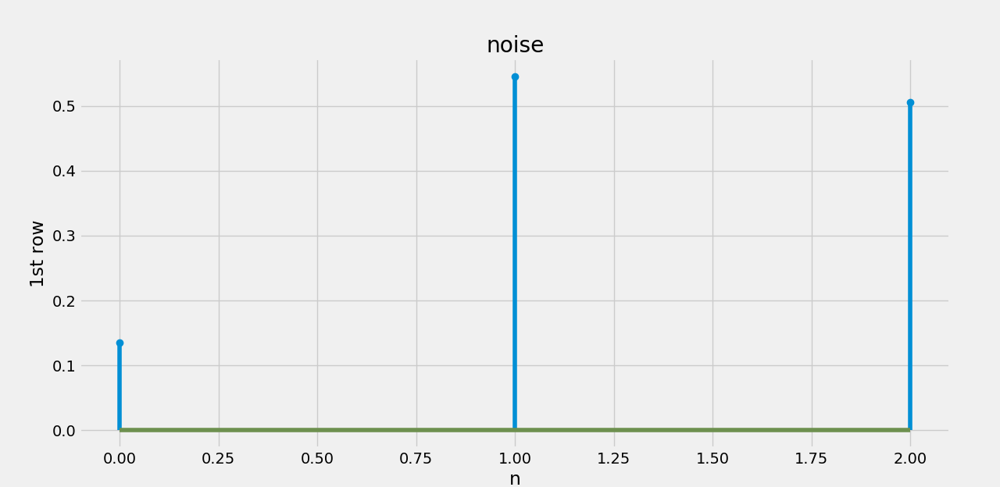

<h1 style="padding-left:4%;padding-top: 2%;padding-bottom: 2%;padding-right: 10%;border-bottom: 1px solid #BDBDBD;">


Digital Signal Processing


</h1>


Python based program


<h2><a href="DSPPython.mp4" target="_blank"> Process </a></h2>


<h3><u> Figures </u></h3>





